Derive two-sided cost of carry and interpret spot–futures basis
Useful first: Convert futures quotations into payoff and conditional loss bounds, Interpret basis and explain conditional convergence, Build daily margin accounts and reconcile trading result
Lesson outline
- 02IntroductionSee the main question, learning objectives and prerequisites.
- 03Key definitions and conceptsGet familiar with the important terms and notation.
- 04Cost of carry and calendar spreadsWhat determines a fair delivery price when an asset can be bought today, financed, and held until delivery?
- 05Foundations and conventionsthe stated quantities is today's spot price per unit of the underlying, the stated quantities today's agreed delivery price per unit, and the stated quantities the time to maturity in years.
- 06Borrow cash, buy spot and sell futuresAt time zero borrow the stated quantities, pay it to buy one unit, and short one matching futures contract.
- 07Borrow the asset, sell spot and buy futuresFor the reverse strategy, borrow the asset, sell it for the stated quantities, invest the proceeds and open a long matching futures position.
- 08Basis, carry, contango and backwardationThe course defines basis as spot minus futures, the stated quantities.
- 09What makes the replication validThe lecture's linear rates, known income/costs, tradeable underlying, available short sales, matching delivery and locked funding underpin the derivation.
- 10Cost of carry and calendar spreadsWhat determines a fair delivery price when an asset can be bought today, financed, and held until delivery?
- 11Try a carry calculationThis illustrative calculation uses the prepared two-sided cost-of-carry model: identical spot and delivery assets, one common simple annual financing rate, and no storage charges,…
- 12Worked exampleFollow a complete application of the reasoning.
- 13Practise the reasoningWork through written tasks, with optional support and solutions.
- 14Check your reasoning: an offline quizCheck your choices and see feedback without a connection.
- 15Check your understandingReview the key distinctions and check what you can explain.
- 16Test yourself laterTry another prepared question before rereading.
- 17SourcesFind the materials and limits behind the lesson.
Introduction
In this lesson, derive two-sided cost of carry and interpret spot–futures basis.
2.1 What you’ll learn
- Construct both reversible replication packages
- Derive simple-rate fair delivery price and basis
- Calculate high/low quote payoffs and qualify feasibility.
2.2 Before you begin
- Convert futures quotations into payoff and conditional loss bounds
- Interpret basis and explain conditional convergence
- Build daily margin accounts and reconcile trading result
Check the foundations
A matching unit is bought for \(100\) with a \(100\) loan and a short future. Opening net investment? If futures exceed spot at maturity under executable delivery, which side profits? Can a hedge with a fixed final net price still require interim margin deposits, and why?
Reveal foundation explanation
\(+100-100+0=0\); buy spot and deliver into the short if the delivery price exceeds matching spot. A futures short is distinct from borrowing the underlying. A daily adverse futures settlement can reduce the account below maintenance and require top-ups even when the matching final spot leg offsets it; final net price is not interim funding. Require zero net funding, direction/sign and this timing distinction;
Key definitions and concepts
- Cost of carry: Net financing/holding cost less transferable income over the delivery interval.
- Cash-and-carry: Borrow cash, buy the asset and sell matching future delivery.
- Reverse carry: Borrow/sell the asset, invest proceeds and buy future delivery under reversible terms.
Cost of carry and calendar spreads
What determines a fair delivery price when an asset can be bought today, financed, and held until delivery? The lecture answers by constructing two ways to obtain the same asset at the same date. Comparing their cash flows removes the need to predict the future spot price. This is the core of Week 3 because currency, bond and index pricing are applications of the same replication logic.

This source-grounded map follows physical slides 2–10; the present note develops slides 2–5, with the applications in the other Week 3 notes.
Foundations and conventions
\(S_0\) is today's spot price per unit of the underlying, \(F_0\) today's agreed delivery price per unit, and \(T\) the time to maturity in years. Annual decimal rates \(d\) and \(r\) represent respectively income/benefits and holding costs.
The source lists coupons, dividends and convenience yield under \(d\), and interest, insurance, storage and deterioration under \(r\). In the linear model, income is \(dS_0T\), cost is \(rS_0T\), and net carry is \(S_0(d-r)T\).
No particular calendar day-count basis is supplied.
A long commits to buy and a short to sell. The foundational distinction is between paying for an asset now and agreeing a delivery price now: entering the idealized forward/futures position has zero opening value, whereas acquiring the asset costs \(S_0\).
A financed spot position can nevertheless have zero net opening investment because the loan receipt pays for the purchase. No-arbitrage rules out a feasible zero-investment package with a sure positive payoff;
if both the package and its reverse can be traded, its riskless payoff must be zero. These are model conditions, not a promise that any real investment earns a guaranteed return.
Borrow cash, buy spot and sell futures
At time zero borrow \(S_0\), pay it to buy one unit, and short one matching futures contract. Opening cash is \(+S_0-S_0+0=0\). At maturity the asset is delivered for \(F_0\), the loan principal \(S_0\) and its interest \(rS_0T\) are repaid, and the asset's income \(dS_0T\) is received. Under the source's deterministic simple-rate/timing assumptions,
Setting this to zero and collecting \(S_0\) terms gives
Financing raises the delivery price; income received while holding the asset lowers the net cost of replicating delivery. If quoted \(F_0\) exceeds this value, the package earns a sure positive modeled payoff: buy the asset cheaply through spot plus financing and sell the expensive delivery commitment.

opening loan/purchase cancel, and maturity inflows equal maturity outflows at the fair price. The asset's uncertain resale price does not enter because the asset is delivered under the agreed contract.
Borrow the asset, sell spot and buy futures
For the reverse strategy, borrow the asset, sell it for \(S_0\), invest the proceeds and open a long matching futures position. Opening net cash is again zero. At maturity the deposit returns \(S_0+rS_0T\). Pay \(F_0\) to take delivery, return the asset to its owner and compensate the owner for income \(dS_0T\). Thus
This is the negative of the first payoff. If \(F_0\) is too low, buy delivery cheaply and sell the asset now.
When both strategies are feasible, neither sign can generate a riskless gain, forcing the equality above. In this strategy \(r\) is the modeled deposit return, whereas slide 3 uses it as financing cost;
the common rate and reversible cash flows are substantive assumptions. Shorting restrictions or different borrowing/lending terms can replace one exact price by a range.
Basis, carry, contango and backwardation
The course defines basis as spot minus futures, \(B_0=S_0-F_0\). Therefore
If \(d>r\), net carry and basis are positive, so \(F_0<S_0\): the lecture calls this backwardation. If \(d<r\), carry and basis are negative, so \(F_0>S_0\): contango.
If \(d=r\), \(F_0=S_0\). These price relations follow from the stated model and sign convention.
A positive cost of carry \(r-d\) has the opposite sign to positive net carry \(d-r\); interchanging the terms reverses the conclusion.
No forecast of future spot prices follows solely from these inequalities.
What makes the replication valid
The lecture's linear rates, known income/costs, tradeable underlying, available short sales, matching delivery and locked funding underpin the derivation. A convenience benefit from physical ownership need not be a cash coupon transferable to a short seller.
Thus listing convenience yield on slide 2 does not establish that every asset supports both exact arbitrages. External qualification: Damodaran's NYU “Futures Arbitrage,” sections “Storable Commodities” and “Stock Index Futures,” explains that funding differences, shorting costs and uncertain dividends weaken exact replication. These are reasons to inspect feasibility before applying the equation. Damodaran, consulted sections.
The source aggregates all futures flows at delivery. Actual futures have daily variation margin, as explained in the Week 1 margin note.
That cash timing, funding and reinvestment can matter; this note preserves the lecture's simplified replication rather than treating a forward-style cash-flow table as a complete margin-funding model.
The simple formula also differs from compounded conventions: do not replace it silently by an exponential.
Cost of carry and calendar spreads
Read the full checked source context
What determines a fair delivery price when an asset can be bought today, financed, and held until delivery? The lecture answers by constructing two ways to obtain the same asset at the same date. Comparing their cash flows removes the need to predict the future spot price. This is the core of Week 3 because currency, bond and index pricing are applications of the same replication logic.
This source-grounded map follows physical slides 2–10; the present note develops slides 2–5, with the applications in the other Week 3 notes.
Foundations and conventions
\(S_0\) is today's spot price per unit of the underlying, \(F_0\) today's agreed delivery price per unit, and \(T\) the time to maturity in years. Annual decimal rates \(d\) and \(r\) represent respectively income/benefits and holding costs.
The source lists coupons, dividends and convenience yield under \(d\), and interest, insurance, storage and deterioration under \(r\). In the linear model, income is \(dS_0T\), cost is \(rS_0T\), and net carry is \(S_0(d-r)T\).
No particular calendar day-count basis is supplied.
A long commits to buy and a short to sell. The foundational distinction is between paying for an asset now and agreeing a delivery price now: entering the idealized forward/futures position has zero opening value, whereas acquiring the asset costs \(S_0\).
A financed spot position can nevertheless have zero net opening investment because the loan receipt pays for the purchase. No-arbitrage rules out a feasible zero-investment package with a sure positive payoff;
if both the package and its reverse can be traded, its riskless payoff must be zero. These are model conditions, not a promise that any real investment earns a guaranteed return.
Borrow cash, buy spot and sell futures
At time zero borrow \(S_0\), pay it to buy one unit, and short one matching futures contract. Opening cash is \(+S_0-S_0+0=0\). At maturity the asset is delivered for \(F_0\), the loan principal \(S_0\) and its interest \(rS_0T\) are repaid, and the asset's income \(dS_0T\) is received. Under the source's deterministic simple-rate/timing assumptions,
Setting this to zero and collecting \(S_0\) terms gives
Financing raises the delivery price; income received while holding the asset lowers the net cost of replicating delivery. If quoted \(F_0\) exceeds this value, the package earns a sure positive modeled payoff: buy the asset cheaply through spot plus financing and sell the expensive delivery commitment.
opening loan/purchase cancel, and maturity inflows equal maturity outflows at the fair price. The asset's uncertain resale price does not enter because the asset is delivered under the agreed contract.
Borrow the asset, sell spot and buy futures
For the reverse strategy, borrow the asset, sell it for \(S_0\), invest the proceeds and open a long matching futures position. Opening net cash is again zero. At maturity the deposit returns \(S_0+rS_0T\). Pay \(F_0\) to take delivery, return the asset to its owner and compensate the owner for income \(dS_0T\). Thus
This is the negative of the first payoff. If \(F_0\) is too low, buy delivery cheaply and sell the asset now.
When both strategies are feasible, neither sign can generate a riskless gain, forcing the equality above. In this strategy \(r\) is the modeled deposit return, whereas slide 3 uses it as financing cost;
the common rate and reversible cash flows are substantive assumptions. Shorting restrictions or different borrowing/lending terms can replace one exact price by a range.
Basis, carry, contango and backwardation
The course defines basis as spot minus futures, \(B_0=S_0-F_0\). Therefore
If \(d>r\), net carry and basis are positive, so \(F_0<S_0\): the lecture calls this backwardation. If \(d<r\), carry and basis are negative, so \(F_0>S_0\): contango.
If \(d=r\), \(F_0=S_0\). These price relations follow from the stated model and sign convention.
A positive cost of carry \(r-d\) has the opposite sign to positive net carry \(d-r\); interchanging the terms reverses the conclusion.
No forecast of future spot prices follows solely from these inequalities.
Carry between two delivery dates
Let \(F_0^1,F_0^2\) be current prices for deliveries at \(T^1<T^2\), both measured in years, and put \(\Delta T=T^2-T^1\). Today go long the earlier contract, short the later one, and arrange a forward loan for the interval \([T^1,T^2]\).
The source assigns zero initial cash to each agreement. At \(T^1\) draw \(F_0^1\) under the arranged loan and pay the earlier contract to acquire the asset.
Hold it only for \(\Delta T\); the source measures income and financing cost relative to the amount \(F_0^1\) financed.
At \(T^2\) deliver for \(F_0^2\) and repay the loan:
Moving the delivery-price terms to one side gives
The earlier-minus-later spread equals carry over the intervening interval. Using \(T^2\) instead of \(T^2-T^1\) would charge for time before the asset was acquired. Using \(S_0\) rather than \(F_0^1\) would change the financing base in the source's construction. This is a separate interval model with funding terms locked today, not a license to combine inconsistent rates across maturities.
What makes the replication valid
The lecture's linear rates, known income/costs, tradeable underlying, available short sales, matching delivery and locked funding underpin the derivation. A convenience benefit from physical ownership need not be a cash coupon transferable to a short seller.
Thus listing convenience yield on slide 2 does not establish that every asset supports both exact arbitrages. External qualification: Damodaran's NYU “Futures Arbitrage,” sections “Storable Commodities” and “Stock Index Futures,” explains that funding differences, shorting costs and uncertain dividends weaken exact replication. These are reasons to inspect feasibility before applying the equation. Damodaran, consulted sections.
The source aggregates all futures flows at delivery. Actual futures have daily variation margin, as explained in the Week 1 margin note.
That cash timing, funding and reinvestment can matter; this note preserves the lecture's simplified replication rather than treating a forward-style cash-flow table as a complete margin-funding model.
The simple formula also differs from compounded conventions: do not replace it silently by an exponential.
Try a carry calculation
This illustrative calculation uses the prepared two-sided cost-of-carry model: identical spot and delivery assets, one common simple annual financing rate, and no storage charges, income, transaction costs or margin-financing differences. The calculation is a model implication under those assumptions.
Let the spot price be \(S_0=100\), the simple annual rate \(r=0.06\), and delivery occur after \(T=0.5\) years. What is the no-arbitrage futures price in this model?
Reveal explanation
Financing spot purchase costs \(S_0(1+rT)=100(1+0.06\times0.5)=103\) at delivery. The year fraction and annual rate must match. The reverse strategy supplies the opposite inequality when the asset can be borrowed and sold, giving equality under the model assumptions. Different financing, storage, income or trading constraints can change the relationship.
Worked example
Prompt: One unit of a hypothetical storable asset costs \(S_0=100\) currency units. Annual simple holding/funding cost is \(r=0.06\) and known transferable income yield \(d=0.02\);
delivery is in \(T=0.5\) years. Assume reversible borrowing/lending/shorting, equal relevant rates, matching asset/delivery, deterministic cash income, and aggregate terminal futures flows.
Construct both zero-net-opening-investment strategies with every terminal flow; derive and calculate fair \(F_0\) and spot-minus-futures basis.
Explain contango/backwardation and what it says about a future-spot forecast. Evaluate delivery quotes \(103.500000\) and \(100.500000\) and give the feasible arbitrage direction and profit per unit for each.
Finally identify why convenience benefits, shorting/funding restrictions or daily margin could invalidate the exact equality.
Solution: Borrow \(100\), buy one unit and short the delivery commitment: opening \(+100-100=0\), terminal \(F_0+dS_0T-S_0-rS_0T\). Reverse: borrow/sell one unit, invest \(100\) and go long;
terminal \(S_0+rS_0T-F_0-dS_0T\). The payoffs are negatives under the stated identical reversible terms.
Zeroing either gives \(F_0=S_0[1+(r-d)T]=102.000000\) and \(B_0=S_0-F_0=-2.000000\). The futures price exceeds spot, so this is contango.
These are current model price relations, not a forecast of terminal spot. At the high quote, borrow cash/buy spot/short delivery;
profit is \(103.500000+0.02(100)(0.5)-100-0.06(100)(0.5)=1.500000\). At the low quote, borrow asset/sell spot/invest/go long;
profit is \(100+0.06(100)(0.5)-100.500000-0.02(100)(0.5)=1.500000\). A nontransferable convenience benefit is not necessarily cash that a short can compensate, and asymmetric funding or shorting restrictions can prevent reversing the package.
Daily variation-margin dates create funding/reinvestment effects omitted by this terminal model; exact equality is conditional, not universal.
Practise the reasoning
Write your reasoning before revealing an explanation. Begin with support, then apply the ideas to another situation.
13.1 Written exercise 1
One unit of a hypothetical storable asset costs \(S_0=80\) currency units.
Solve the following:
- Annual simple holding/funding cost is \(r=0.02\) and known transferable income yield \(d=0.05\);
- delivery is in \(T=1\) years.
- Assume reversible borrowing/lending/shorting, equal relevant rates, matching asset/delivery, deterministic cash income, and aggregate terminal futures flows.
- Construct both zero-net-opening-investment strategies with every terminal flow;
- derive and calculate fair \(F_0\) and spot-minus-futures basis.
- Explain contango/backwardation and what it says about a future-spot forecast.
- Evaluate delivery quotes \(79.600000\) and \(75.600000\) and give the feasible arbitrage direction and profit per unit for each.
- Finally identify why convenience benefits, shorting/funding restrictions or daily margin could invalidate the exact equality.
Show a hint
Pause before calculating or choosing an explanation:
- What quantities, actors or outcomes are being compared? Write their roles, units and dates beside them.
- Which condition decides whether the relationship applies? Check the relevant definition before using a formula or classifying the case.
- What would have to remain fixed for your comparison to be meaningful? Work through one link in the reasoning at a time.
- How could you check the direction, boundary case or alternative explanation before stating your conclusion?
A local draft for your own study.
Reveal explanation
Solution: Borrow \(80\), buy one unit and short the delivery commitment: opening \(+80-80=0\), terminal \(F_0+dS_0T-S_0-rS_0T\). Reverse: borrow/sell one unit, invest \(80\) and go long;
terminal \(S_0+rS_0T-F_0-dS_0T\). The payoffs are negatives under the stated identical reversible terms.
Zeroing either gives \(F_0=S_0[1+(r-d)T]=77.600000\) and \(B_0=S_0-F_0=2.400000\). The futures price is below spot, so this is backwardation.
These are current model price relations, not a forecast of terminal spot. At the high quote, borrow cash/buy spot/short delivery;
profit is \(79.600000+0.05(80)(1)-80-0.02(80)(1)=2.000000\). At the low quote, borrow asset/sell spot/invest/go long;
profit is \(80+0.02(80)(1)-75.600000-0.05(80)(1)=2.000000\). A nontransferable convenience benefit is not necessarily cash that a short can compensate, and asymmetric funding or shorting restrictions can prevent reversing the package.
Daily variation-margin dates create funding/reinvestment effects omitted by this terminal model; exact equality is conditional, not universal.
13.2 Written exercise 2
One unit of a hypothetical storable asset costs \(S_0=120\) currency units.
Solve the following:
- Annual simple holding/funding cost is \(r=0.07\) and known transferable income yield \(d=0.03\);
- delivery is in \(T=0.75\) years.
- Assume reversible borrowing/lending/shorting, equal relevant rates, matching asset/delivery, deterministic cash income, and aggregate terminal futures flows.
- Construct both zero-net-opening-investment strategies with every terminal flow;
- derive and calculate fair \(F_0\) and spot-minus-futures basis.
- Explain contango/backwardation and what it says about a future-spot forecast.
- Evaluate delivery quotes \(124.600000\) and \(122.600000\) and give the feasible arbitrage direction and profit per unit for each.
- Finally identify why convenience benefits, shorting/funding restrictions or daily margin could invalidate the exact equality.
A local draft for your own study.
Reveal explanation
Solution: Borrow \(120\), buy one unit and short the delivery commitment: opening \(+120-120=0\), terminal \(F_0+dS_0T-S_0-rS_0T\). Reverse: borrow/sell one unit, invest \(120\) and go long;
terminal \(S_0+rS_0T-F_0-dS_0T\). The payoffs are negatives under the stated identical reversible terms.
Zeroing either gives \(F_0=S_0[1+(r-d)T]=123.600000\) and \(B_0=S_0-F_0=-3.600000\). The futures price exceeds spot, so this is contango.
These are current model price relations, not a forecast of terminal spot. At the high quote, borrow cash/buy spot/short delivery;
profit is \(124.600000+0.03(120)(0.75)-120-0.07(120)(0.75)=1.000000\). At the low quote, borrow asset/sell spot/invest/go long;
profit is \(120+0.07(120)(0.75)-122.600000-0.03(120)(0.75)=1.000000\). A nontransferable convenience benefit is not necessarily cash that a short can compensate, and asymmetric funding or shorting restrictions can prevent reversing the package.
Daily variation-margin dates create funding/reinvestment effects omitted by this terminal model; exact equality is conditional, not universal.
13.3 Written exercise 3
One unit of a hypothetical storable asset costs \(S_0=200\) currency units.
Solve the following:
- Annual simple holding/funding cost is \(r=0.03\) and known transferable income yield \(d=0.06\);
- delivery is in \(T=0.5\) years.
- Assume reversible borrowing/lending/shorting, equal relevant rates, matching asset/delivery, deterministic cash income, and aggregate terminal futures flows.
- Construct both zero-net-opening-investment strategies with every terminal flow;
- derive and calculate fair \(F_0\) and spot-minus-futures basis.
- Explain contango/backwardation and what it says about a future-spot forecast.
- Evaluate delivery quotes \(200.000000\) and \(194.000000\) and give the feasible arbitrage direction and profit per unit for each.
- Finally identify why convenience benefits, shorting/funding restrictions or daily margin could invalidate the exact equality.
A local draft for your own study.
Reveal explanation
Solution: Borrow \(200\), buy one unit and short the delivery commitment: opening \(+200-200=0\), terminal \(F_0+dS_0T-S_0-rS_0T\). Reverse: borrow/sell one unit, invest \(200\) and go long;
terminal \(S_0+rS_0T-F_0-dS_0T\). The payoffs are negatives under the stated identical reversible terms.
Zeroing either gives \(F_0=S_0[1+(r-d)T]=197.000000\) and \(B_0=S_0-F_0=3.000000\). The futures price is below spot, so this is backwardation.
These are current model price relations, not a forecast of terminal spot. At the high quote, borrow cash/buy spot/short delivery;
profit is \(200.000000+0.06(200)(0.5)-200-0.03(200)(0.5)=3.000000\). At the low quote, borrow asset/sell spot/invest/go long;
profit is \(200+0.03(200)(0.5)-194.000000-0.06(200)(0.5)=3.000000\). A nontransferable convenience benefit is not necessarily cash that a short can compensate, and asymmetric funding or shorting restrictions can prevent reversing the package.
Daily variation-margin dates create funding/reinvestment effects omitted by this terminal model; exact equality is conditional, not universal.
13.4 Another chance to practise
A cash-flow derivation has replaced an uncertain terminal price by its expectation and then calls its realized payoff guaranteed.
Solve the following:
- Is the inference justified, and what must a riskless replication establish instead?
A local draft for your own study.
Reveal explanation
No: an expectation is not a realized amount. Matching feasible dated inflows/outflows must cancel uncertain states or contract the necessary conversions.
Check your reasoning: an offline quiz
Choose one answer per question. Check individual answers or check the whole quiz. Each option includes feedback on the reasoning, and everything works offline.
Reveal explanation
Use \(100[1+(0.06-0.02)0.5]=102\), then \(100-102=-2\).
Reveal explanation
Sell overpriced future delivery against the financed asset; reverse carry would lose the same amount.
Reveal explanation
The reverse package requires genuinely reversible cash flows; noncash benefits and trading restrictions can break that replication.
Check your understanding
- Construct both reversible replication packages
- Derive simple-rate fair delivery price and basis
- Calculate high/low quote payoffs and qualify feasibility.
Test yourself later
Return to these questions after a break, before rereading the explanation. Use a question you have not just viewed.
16.1 Review question 1
One unit of a hypothetical storable asset costs \(S_0=90\) currency units.
Solve the following:
- Annual simple holding/funding cost is \(r=0.08\) and known transferable income yield \(d=0.02\);
- delivery is in \(T=0.25\) years.
- Assume reversible borrowing/lending/shorting, equal relevant rates, matching asset/delivery, deterministic cash income, and aggregate terminal futures flows.
- Construct both zero-net-opening-investment strategies with every terminal flow;
- derive and calculate fair \(F_0\) and spot-minus-futures basis.
- Explain contango/backwardation and what it says about a future-spot forecast.
- Evaluate delivery quotes \(92.550000\) and \(90.150000\) and give the feasible arbitrage direction and profit per unit for each.
- Finally identify why convenience benefits, shorting/funding restrictions or daily margin could invalidate the exact equality.
A local draft for your own study.
Reveal explanation
Solution: Borrow \(90\), buy one unit and short the delivery commitment: opening \(+90-90=0\), terminal \(F_0+dS_0T-S_0-rS_0T\). Reverse: borrow/sell one unit, invest \(90\) and go long;
terminal \(S_0+rS_0T-F_0-dS_0T\). The payoffs are negatives under the stated identical reversible terms.
Zeroing either gives \(F_0=S_0[1+(r-d)T]=91.350000\) and \(B_0=S_0-F_0=-1.350000\). The futures price exceeds spot, so this is contango.
These are current model price relations, not a forecast of terminal spot. At the high quote, borrow cash/buy spot/short delivery;
profit is \(92.550000+0.02(90)(0.25)-90-0.08(90)(0.25)=1.200000\). At the low quote, borrow asset/sell spot/invest/go long;
profit is \(90+0.08(90)(0.25)-90.150000-0.02(90)(0.25)=1.200000\). A nontransferable convenience benefit is not necessarily cash that a short can compensate, and asymmetric funding or shorting restrictions can prevent reversing the package.
Daily variation-margin dates create funding/reinvestment effects omitted by this terminal model; exact equality is conditional, not universal.
16.2 Review question 2
One unit of a hypothetical storable asset costs \(S_0=150\) currency units.
Solve the following:
- Annual simple holding/funding cost is \(r=0.02\) and known transferable income yield \(d=0.04\);
- delivery is in \(T=0.75\) years.
- Assume reversible borrowing/lending/shorting, equal relevant rates, matching asset/delivery, deterministic cash income, and aggregate terminal futures flows.
- Construct both zero-net-opening-investment strategies with every terminal flow;
- derive and calculate fair \(F_0\) and spot-minus-futures basis.
- Explain contango/backwardation and what it says about a future-spot forecast.
- Evaluate delivery quotes \(150.250000\) and \(145.250000\) and give the feasible arbitrage direction and profit per unit for each.
- Finally identify why convenience benefits, shorting/funding restrictions or daily margin could invalidate the exact equality.
A local draft for your own study.
Reveal explanation
Solution: Borrow \(150\), buy one unit and short the delivery commitment: opening \(+150-150=0\), terminal \(F_0+dS_0T-S_0-rS_0T\). Reverse: borrow/sell one unit, invest \(150\) and go long;
terminal \(S_0+rS_0T-F_0-dS_0T\). The payoffs are negatives under the stated identical reversible terms.
Zeroing either gives \(F_0=S_0[1+(r-d)T]=147.750000\) and \(B_0=S_0-F_0=2.250000\). The futures price is below spot, so this is backwardation.
These are current model price relations, not a forecast of terminal spot. At the high quote, borrow cash/buy spot/short delivery;
profit is \(150.250000+0.04(150)(0.75)-150-0.02(150)(0.75)=2.500000\). At the low quote, borrow asset/sell spot/invest/go long;
profit is \(150+0.02(150)(0.75)-145.250000-0.04(150)(0.75)=2.500000\). A nontransferable convenience benefit is not necessarily cash that a short can compensate, and asymmetric funding or shorting restrictions can prevent reversing the package.
Daily variation-margin dates create funding/reinvestment effects omitted by this terminal model; exact equality is conditional, not universal.
Sources
Show materials and lesson scope
- L12(CostOfCarryModel).pptx, physical slide 2–5
- L12(CostOfCarryModel).pptx, physical slide 2–10
- L12(CostOfCarryModel).pptx, physical slide 2–4
- L12(CostOfCarryModel).pptx, physical slide 3
- L12(CostOfCarryModel).pptx, physical slide 4
- L12(CostOfCarryModel).pptx, physical slide 3–4
- L12(CostOfCarryModel).pptx, physical slide 3–5
- L12(CostOfCarryModel).pptx, physical slide 5
Numerical and contextual illustrations are hypothetical unless explicitly described as a reported result. Historical data, model assumptions and unresolved source differences retain their stated limits.
These exercises are for self-study. Viewing a prepared item or solution may make that item unsuitable as a fresh check in a tutor chat. This page does not record an assessed learning result.